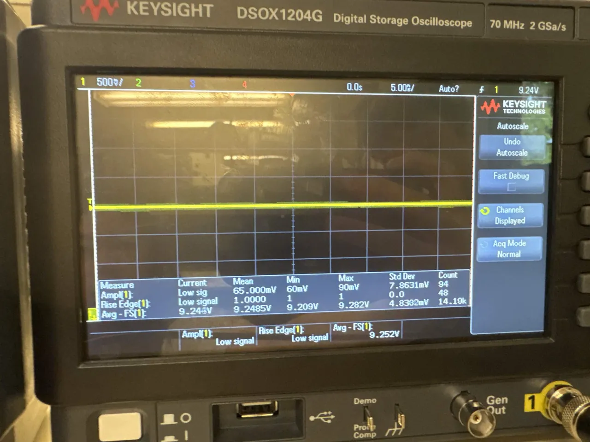
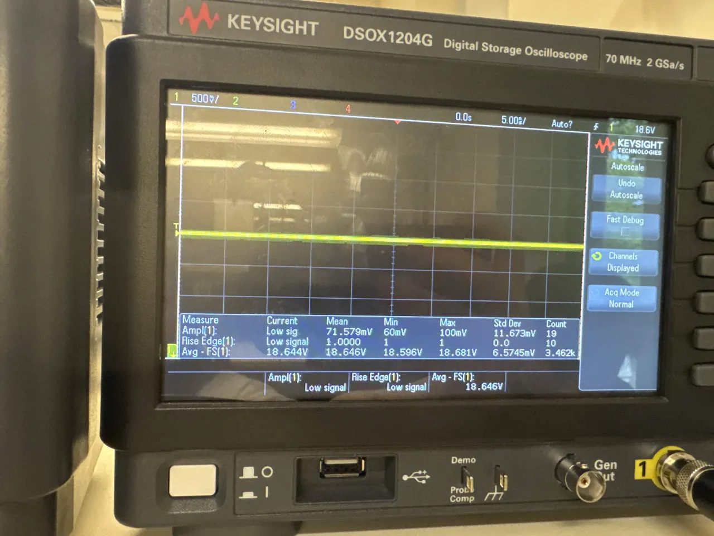
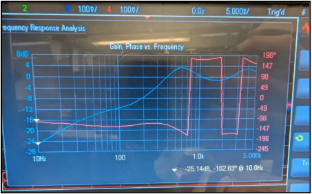
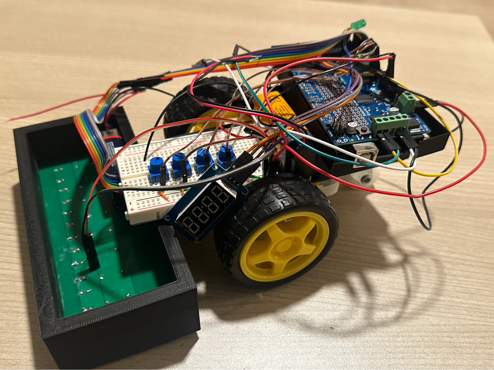
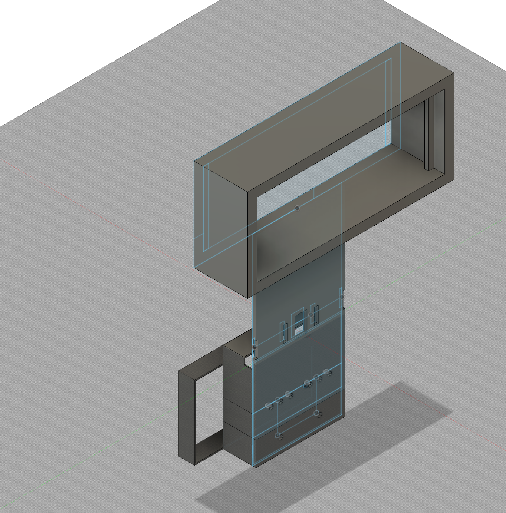
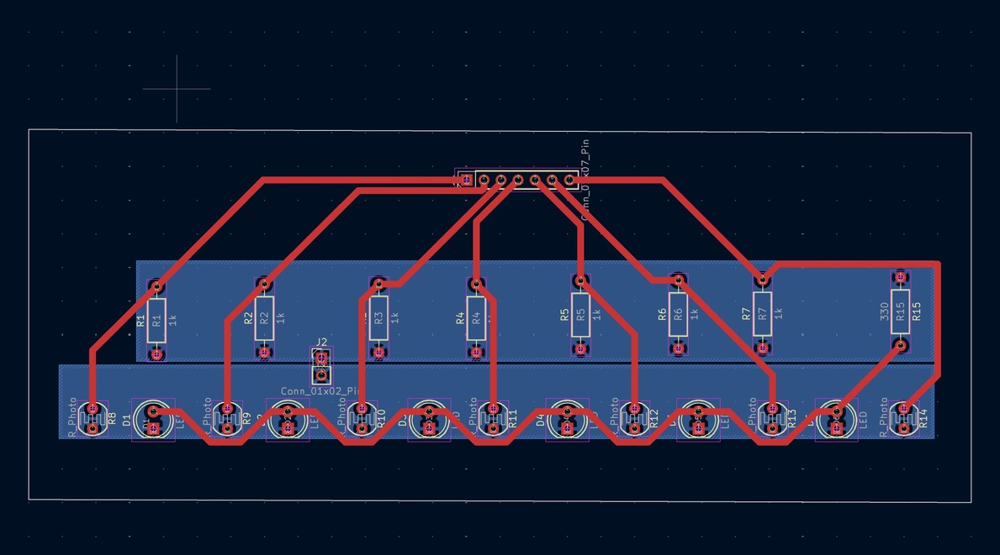
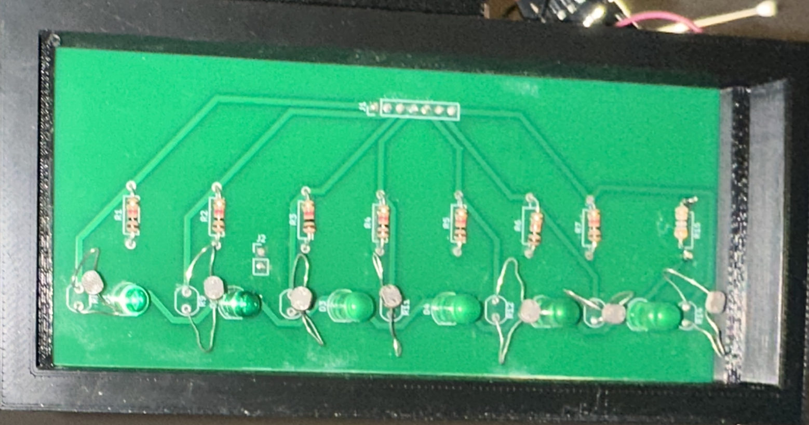

Engineering Projects
Microstrip RF syntheses, power converter hardware, PCB prototypes, and closed-loop control systems.
1090 MHz 4th-Order Chebyshev Microstrip Hairpin Filter
Synthesized and simulated a 4th-order Chebyshev bandpass filter centered at 1090 MHz with a 45 MHz passband ($FBW = 4.13\%$) for ADS-B signal reception. Derived prototype $g_i$ values, admittance inverters ($J_{01}/Y_0 = 0.2419$, $J_{12}/Y_0 = 0.0448$), and even/odd mode impedances ($Z_{0e}, Z_{0o}$). Folded $\lambda/2$ resonators into U-shaped hairpins to cut board area by $>50\%$ and implemented direct $50\ \Omega$ tapped-line feeds to achieve return loss $S_{11} < -15\text{ dB}$.
AC-to-DC Power Supply & Step-Up Boost Converter
Constructed a two-stage power supply converting $\pm 7.5\text{ VAC}$ ($10.6\text{ V}_{\text{peak}}$, 60 Hz) into an intermediate $+10.0\text{ VDC}$ rail via a center-tapped full-wave rectifier ($2\times\text{1N4007}$) and bulk capacitive filter. Stepped up DC voltage using an inductive Continuous Conduction Mode (CCM) boost topology ($V_{\text{out}} = V_{\text{in}} / (1 - D)$) driven by a 555-timer astable clock. Output voltage is tuned across the load range via a potentiometer-controlled Zener shunt network ($2\times\text{1N4732A} + R_6$) paired with a fixed $19.7\text{ V}$ overvoltage clamp ($\text{1N4744A} + \text{1N4732A}$). Bench testing verified an initial range of $+9.25\text{ V}$ to $+18.65\text{ VDC}$ with ripple under $72\text{ mV}_{\text{p-p}}$; subsequent circuit optimization extended the range closer to the $10\text{–}20\text{ V}$ design target, with low-end ripple tradeoffs ($474\text{ mV}$) documented from breadboard parasitics and component tolerances.



3-Channel Analog Audio Mixing Console & Multi-Band Equalizer
Engineered an analog audio processing console handling two line-level inputs and one electret condenser microphone channel. Includes an active low-noise preamplifier with DC blocking ($1\ \mu\text{F}$) and high-frequency noise attenuation, feeding into a 3-channel virtual-ground inverting summing amplifier. A unity-gain buffer isolates the mixer from an equalizer stage utilizing a reconfigurable 2nd-order active filter topology (built around $R_1\text{–}R_5$, $C_1$, $C_2$, and a single op-amp) instantiated three times at different center frequencies (250 Hz, 1 kHz, and 4 kHz) via selected capacitor values. A single potentiometer on each stage controls filter character: below ~50% it behaves as a band-pass, at ~50% it flattens to an all-pass, and above ~50% it becomes a band-stop (notch) filter before summing into an output speaker stage.



Autonomous PID Line-Following Robot & Custom Sensor PCB
Engineered an autonomous mobile robot utilizing closed-loop discrete PID control ($\text{Turn} = k_P e + k_I \sum e + k_D \Delta e$) driven by an Arduino Mega and dual DC motor shield. Personally led the schematic capture, symbol creation, and physical trace routing in KiCad for a custom 7-channel optoelectronic sensor PCB ($A8\text{–}A14$) with integrated LED emitter biasing and calibrated dynamic range ($0\text{–}100$). Designed a custom 3D CAD chassis and optical shroud ensuring a rigid $0.5\text{ cm}$ ground clearance to suppress ambient light noise. Implemented an isolated dual-rail power topology to decouple high inductive motor peak currents and prevent microcontroller brownout resets. Built an analog user interface featuring four potentiometer voltage dividers paired with a 7-segment digital display for live gain tuning and telemetry verification ($S=12, P=22, I=0, D=12$).



